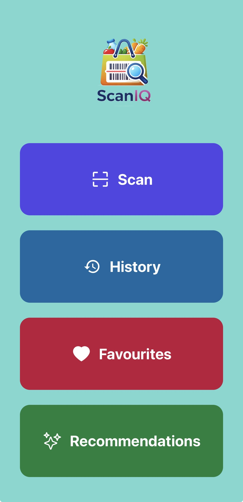
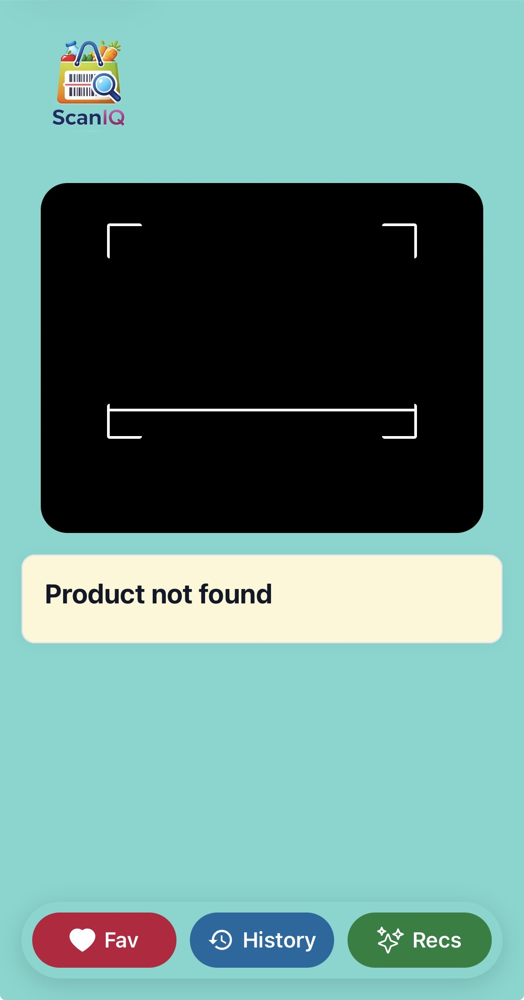
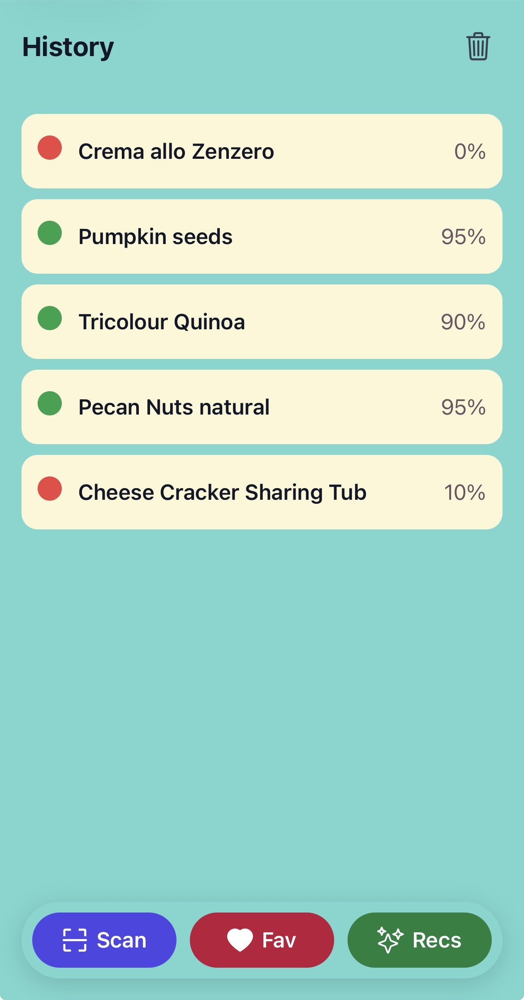

Technology Stack
React Native
TypeScript
JavaScript
API
Smart Ingredient Analysis Mobile App
ScanIQ is a mobile app that helps users understand ingredients using barcode scanning and a scoring system.
It integrates OpenFoodFacts to provide clear explanations and improve food decision-making.
The app focuses on simplicity, transparency, and a modern UI experience.
React Native
TypeScript
JavaScript
API


